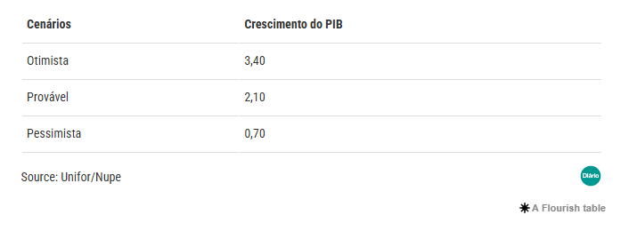

O NUPE aponta que a economia cearense em 2023, no cenário provável, deve avançar 2,1%, portanto, superior às projeções econômicas para o Brasil.
O ano está apenas começando e uma das perguntas, na seara econômica, atualmente de maior evidência consiste sobre o desempenho econômico em 2023, e em particular, da nossa economia cearense.
ECONOMIA BRASILEIRA EM 2023
No radar macroeconômico, tem520os juros elevados, novo arcabouço fiscal, câmbio volátil e inflação descendente, embora venha apresentando certa resiliência para ser “endereçada” a meta de 3,25% para o ano de 2023.
No campo inflacionário, nossa “pedra no sapato”, que repercute em diversas variáveis econômicas, como na capacidade de consumo das famílias, nas margens de lucros dos negócios e nos juros, as projeções de mercado do relatório Focus desta segunda-feira (30/01/2023) apontam para um IPCA em 5,74%, maior que o limite superior da meta de 4,75% para 2023.
Em nível nacional, a atividade econômica no Brasil, pela métrica do PIB, segundo o relatório Focus, deve apresentar crescimento de 0,8% em 2023. * E o Ceará, qual a expectativa da economia?
CENÁRIOS ECONÔMICOS PARA O CEARÁ EM 2023
O Núcleo de Práticas em Economia (NUPE), do curso de Ciências Econômicas da Unifor, elaborou projeções econômicas, com base em técnicas econométricas (economia + matemática + estatística), tendo como objetivo desenhar os cenários econômicos para o Ceará.
Para 2022, em que os dados ainda serão divulgados pelo IBGE, o NUPE estima que a economia cearense tenha apresentado crescimento econômico de 2,9%.
O NUPE aponta que a economia cearense em 2023, no cenário provável, deve avançar 2,1%, portanto, superior às projeções econômicas para o Brasil.
Cenários Econômicos
Projeções do PIB cearense para 2023
E QUANTO AOS CENÁRIOS OTIMISTA E PESSIMISTA?
O leitor deve estar se perguntando quanto aos cenários otimista e pessimista. Na elaboração de cenários, temos de recorrer as chamadas premissas econômicas. Dessa forma, temos de “colocar na conta” possíveis mudanças nas variáveis econômicas.
PONTOS NEGATIVOS
Entre as principais variáveis que podem apresentar deterioração e levar o PIB cearense em direção ao cenário pessimista estão a inflação, que vêm apresentando resultados preocupantes, sobretudo nos alimentos; e os juros elevados, que prejudicam os negócios e agrava o endividamento das famílias e empresas. Assim, a Indústria e o Comércio, poderão ser os setores mais sensibilizados negativamente.
PONTOS POSITIVOS
A melhora do emprego e da massa salarial, o avanço do setor de serviços, e em particular, das atividades turísticas, são exemplos de pontos positivos, que ajudam a trilhar o sentido do cenário otimista para a economia cearense.
Os investimentos que vem ocorrendo no nosso estado, combinados com a materialização de diversos planos de expansão de capacidade produtiva do Ceará, como na energia e saúde, poderão catalisar o crescimento econômico do nosso estado.
O relatório completo do Núcleo de Pesquisas Econômicas – NUPE pode ser
Fonte: